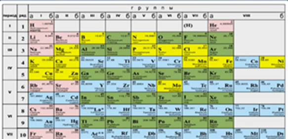
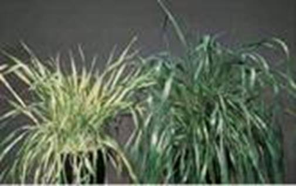
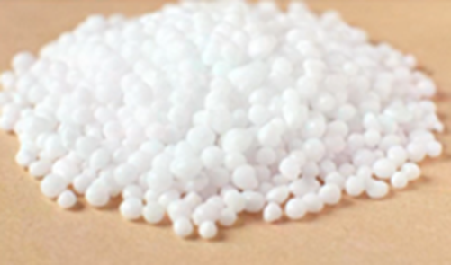
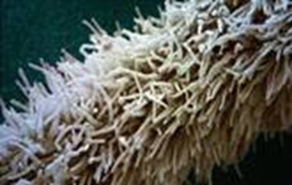
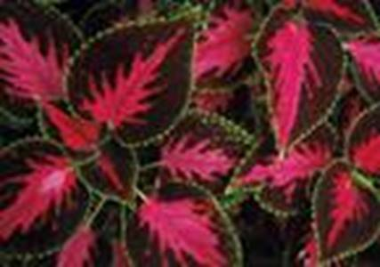
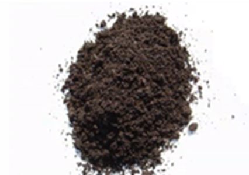

Питание – поглощение организмом химических веществ для получения им энергии и «строительного материала».
Растения для питания используют энергию солнечного света. При помощи фотосинтеза они запасают ее в форме сложных органических соединений. Растения не получают энергию из веществ, входящих в состав почвы.
Фотосинтез – процесс синтеза органических веществ из неорганических с использованием энергии солнечного света.
Минеральное питание растений – это совокупность процессов поглощения из почвы, передвижения по телу и усвоения растениями минеральных веществ.
Опыты Соссюра
В XIX веке французский ученый Соссюр занимался детальным анализом химического состава растений. Состав золы всех растений оказался приблизительно одинаковым. Так ученый обнаружил фосфат кальция в золе всех рассмотренных растений. При выращивании растений на дистиллированной воде ученый обнаружил в них ровно столько минеральных соединений, сколько было в семенах. Таким образом он доказал, что почва является источником только минеральных веществ для растения. А источником углерода для построения органических веществ является атмосфера.
Через корни растения поступает вода и растворенные в ней минеральные соединения (азот, калий, фосфор и т.д. (см. Рис. 1)).

Рис. 1. Периодическая система химических элементов (желтым выделены основные необходимые растениям элементы)
Если растение не получает хотя бы какого-то из необходимых ему химических элементов, то процессы его жизнедеятельности могут резко нарушиться (см. Рис. 2). Другие химические элементы, даже при получении их в избыточном количестве, не способны заменить недостающие.

Рис. 2. Последствия дефицита серы у левого растения
Например, атомы химического элемента азота входят в состав любого белка и еще многих соединений. Соединения азота необходимы растениям в большом количестве при быстром росте. В связи с этим в почву вносят азотные удобрения (см. Рис. 3).

Рис. 3. Азотные удобрения
Соединения фосфора способствуют скорейшему созреванию плодов, а калия – быстрейшему оттоку органических веществ от листьев к стеблям и корням.
Нитраты
Нитраты – соли азотной кислоты, необходимые для жизни растений. Попадая в организм человека, нитраты превращаются в соли – нитриты, которые пагубно действуют на гемоглобин крови, что приводит к отравлению или смерти.
Растения перерабатывают нитраты. И чтобы сельскохозяйственная продукция их не содержала, нужно не злоупотреблять азотными удобрениями.
Водоросли, а также некоторые мхи усваивают питательные вещества с помощью всей поверхности тела или через корни. Вода и минеральные соли обычно поступают через корневые волоски (см. Рис. 4), что увеличивает всасывающую поверхность корня. Корневые волоски покрыты слизью и тесно соприкасаются с частичками почвы.

Рис. 4. Корневые волоски под микроскопом
Из клетки корневого волоска вода поступает в соседние клетки, а затем и в сосуды корня. И далее в верхние органы растения. Этот процесс обеспечивается корневым давлением.
Влияние условий полива на рост колеуса
Возьмите 2 средних размера растения колеуса (см. Рис. 5). Поставьте их в теплое, светлое место и 3 дня не поливайте. Затем поливайте регулярно. Одно из растений поливайте каждый день утром и вечером, расходуя для каждого полива по 50 мл воды. Второе растений поливайте 3 раза в неделю, расходуя для каждого полива по 200 мл воды. Наблюдайте за ростом и развитием растений.

Рис. 5. Колеус
Опыт: у комнатного растения срезается стебель на высоте 10 см от земли, а на оставшийся пенек надевается резиновая трубочка, которая соединяет его со стеклянной трубкой. Если горшок с растением полить теплой водой, то через верхний конец стеклянной трубочки начнет выделять жидкость. Если полить горшок с растением очень холодной водой, то жидкость через стеклянную трубочку выделяться не будет. Это связано с зависимостью скорости поглощения воды корнем от ее температуры.
Растение будет нормально расти и развиваться только в том случае, если в окружающей его среде имеются все необходимые минеральные вещества.
Почва (см. Рис. 6) – это верхний слой литосферы Земли, образовавшийся в результате разрушения горных пород и жизнедеятельности организмов.
Плодородие – способность почвы обеспечивать растение необходимыми минеральными веществами и влагой, поддерживая их жизнедеятельность. Определяется наличием в почве гумуса (перегноя).

Рис. 6. Почва
Каждый урожай уносит с собой часть органических и минеральных веществ почвы. Это приводит к ее истощению. Поэтому в почву вносят органические и минеральные удобрения.
Удобрения – вещества, предназначенные для улучшения питания растений и повышения плодородия почвы.
Органические удобрения – это или отходы жизнедеятельности животных (навоз, птичий помет), или часть отмерших организмов животных, растений (торф, перегной).
Минеральные удобрения: азотные (аммиачная селитра, аммиачная вода), фосфорные (суперфосфат, преципитат), калийные (зола, сильвинит).
Азотные удобрения способствуют увеличению вегетативной массы растения. Фосфатные – ускоряют развитие растений, улучшают качество урожая. Калийные – увеличивают накопление питательных веществ в клубнях и др. частях растений.
Микроудобрения – это удобрения, содержащие соединения химических элементов, необходимых растениям только в небольших количествах (медь, кобальт, цинк, бор, железо).
В разные периоды жизни растения нуждаются в различных наборах минеральных веществ, и удобрения поэтому вносятся в различные сроки, в зависимости от потребностей и вида растений.
Избыток любого из удобрений может повредить растениям и потребителям сельскохозяйственной продукции.
Методы выращивания растений
В современных теплицах применяются методы гидропоники и аэропоники.
Гидропоника – выращивание растений в питательном растворе, содержащем все необходимые вещества.
Аэропоника – выращивание растений, при котором сосудистая корневая система находится в воздухе, откуда получает все необходимые минеральные вещества.
Список литературы
1. Биология. Бактерии, грибы, растения. 6 кл.: учеб. для общеобразоват. учреждений / В.В. Пасечник. – 14-е изд., стереотип. – М.: Дрофа, 2011. – 304 с.: ил.
2. Тихонова Е.Т., Романова Н.И. Биология, 6. – М.: Русское слово.
3. Исаева Т.А., Романова Н.И. Биология, 6. – М.: Русское слово.
Дополнительные рекомендованные ссылки на ресурсы сети Интернет
1. Sbio.info (Источник).
2. Plantphys.bio.msu.ru (Источник).
3. Blueberry.ru (Источник).
Домашнее задание
1. Биология. Бактерии, грибы, растения. 6 кл.: учеб. для общеобразоват. учреждений / В.В. Пасечник. – 14-е изд., стереотип. – М.: Дрофа, 2011. – 304 с.: ил. – с. 160, задания и вопросы 4, 6 (Источник).
2. Что такое корневое давление?
3. Что такое минеральное питание растений? Какие вещества необходимы для его осуществления?
4. * Подготовьте небольшое сообщение об используемых сейчас удобрениях. Поделитесь этой информацией со своей семьей.